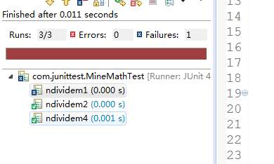

之前一直了解Junit单元测试，但是一直都没使用过，习惯模块自测或者整个项目联调测试。但是新项目有单元测试覆盖率的要求，也就顺便使用加了解一下。网上说不会使用单元测试的程序猿不是好程序猿，我还是努力做个好程序猿吧。 单元测试主要应用于单个方法的测试，对方法的各个方面进行测试，但是常规的调用方法必须重新写一个程序，并在程序中调用需要测试的方法，如果该方法需要的条件较多或者需要的环境比较复杂，则单元测试的复杂程度就非常高了。 所以一般程序比较常用的单元测试是工具是Junit4，他在自定义注解方面的使用让单元测试变得异常简洁，同时它的功能也非常强大。 一：基本配置 junit4依赖于junit.jar。在Eclipse中本身已经集成了junit，选中项目——>build path ——>Configure Build Path 选择Libraries——>Add Library 选择junit即可。 当然这只是最基础的单元测试功能，如果需要使用更强大的单元测试功能，还需要添加其他的第三方依赖，这在后面的内容里面再进行描述。 二：体验 首先在一个简单程序中来使用一下Junit4。这里用一个N除以M的简单方法来试验。其实很明显在这个方法中，当m为0的时候会出现异常，但我们故意不去做处理，交给单元测试去检测。 然后我们写一个测试类MineMathTest,这里我们一般不会把测试类和原始类放在同一个包下，因为测试类只在开发测试过程中有效，开发完毕后是无效的代码。所以一般为单元测试类新建单独的目录，如原始代码在src/main/java目录下，一般我们新建一个src/test/java的文件路径用来放测试类。public class MineMath { public Double ndivideM(int n,int m){ return (double)n/(double)m; } }这边写了四个测试方法，最基本的junit测试使用放假就是@Test的注解，对类名没有要求，这里起名MineMathTest主要是便于区分，在测试方法上加上@Test注解，表明这个方法是个测试方法。然后在测试类运行JUnit，得到的结果为 这里ndividem3在图中未显示出来，因为使用了@Ignore注解，这个注解的作用是忽略被注解的方法，使该方法不被测试。到这里，一个最简单的单元测试就完成了。 下面介绍一些其他的相关注解： @BeforeClass 在所有测试方法前执行一次 @AfterClass 在所有测试方法后执行一次 @Before 在每个测试方法前执行 @After 在每个测试方法后执行 @Test(timeout = 1000)测试方法执行超过1000毫秒后算超时，测试将失败 @Test(expected = Exception.class) 测试方法期望得到的异常类 @Ignore 执行测试时将忽略掉此方法，如果用于修饰类，则忽略整个类 在单元测试中我们还看到了这样一串代码：Assert.assertEquals((Double)0.0, result);这是 junit.framework.Assert 类的静态方法，我们称其为断言。目的是比较结果值是否符合我们的期望，如果符合则测试通过，如果不符合，该方法会抛出一个AssertionFailedError 的异常信息，单元测试在获取到该信息时，会认为此次测试失败。 junit.framework.Assert 类常用的方法： assertEquals() 用来查看对象中存的值是否是期待的值，与字符串比较中使用的 equals() 方法类似； assertFalse() assertTrue() 用来查看变量是是否为 false 或 true，如果 assertFalse() 查看的变量的值是 false 则测试成功，如果是 true 则失败，assertTrue() 与之相反。 assertSame() assertNotSame() 用来比较两个对象的引用是否相等和不相等，类似于通过“==”和“!=”比较两个对象； assertNull() assertNotNull() 用来查看对象是否为空和不为空。public class MineMathTest { private MineMath mineMath = new MineMath(); @Test public void ndividem1(){ int n=1; int m=0; Double result = mineMath.ndivideM(n, m); System.out.println(result); Assert.assertEquals((Double)0.0, result); } @Test public void ndividem2(){ int n=1; int m=2; Double result = mineMath.ndivideM(n, m); System.out.println(result); Assert.assertEquals((Double)0.5, result); } @Ignore public void ndividem3(){ int n=2; int m=1; Double result = mineMath.ndivideM(n, m); System.out.println(result); Assert.assertEquals((Double)2.0, result); } @Test public void ndividem4(){ int n=0; int m=1; Double result = mineMath.ndivideM(n, m); System.out.println(result); Assert.assertEquals((Double)0.0, result); } }